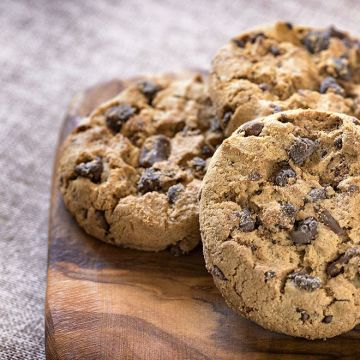

Ce site est dédié à faire des cookies pour une personne, mais des infos vous seront aussi donner au cas où il y aurait plus qu'une personne.

Si tout ce passe bien, vos cookies ressembleront à ça !
Ingrédients nécéssaire à cette recette :
Ingrédients
Nécéssaire
+1 personne
beurre tendre
21.5 g
+ 21 g
sucre
21.5 g
+ 21 g
vanille/sachet de sucre vanillé
1
+ 0
farine
37.5 g
+ 37.5 g
Chocolat
25 g
+ 25 g
sel
1 quart de cuillère à café
+ 1 quart de cuillère à café
levure chimique
1 quart de levure
+ 1 quart de levure
œuf
1 quart d'œuf
+ 1 quart d'œuf
Etapes
1. Détaillez le chocolat en pépites2. Préchauffer le four à 180°, dans un saladier, mettez le beurre, sucre, œuf et vanille puit mélangez avec une cuillère en bois3. Ajoutez petit à petit la farine mélanger à la levure, sel et pépites de chocolat4. Avec une feuille de papier essuie-tout, beurrer une plaque allant au four et former les cookies sur la plaque5. Pour former les coockies, utiliser 2 cuillères à soupe et faire des petits tast espacés les uns des autres6. Enfourner pour 10 minutes de cuisson